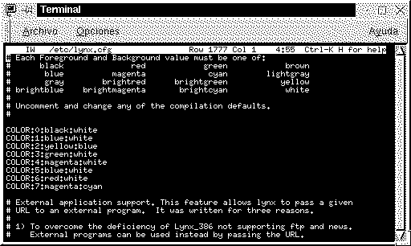

[ < ]
¿Qué hago en Lynx?
Lynx es un navegador Web que funciona en modo texto..
La principal ventaja de Lynx es que NO nos obliga a 'subir' a ningún
entorno de ventanas (llámese éste XWindow, OS/2, Windows...)
para ver cualquier fichero HTML que nos encontremos en nuestro disco duro,
ya que simplemente podemos irnos en modo texto a cualquier página
Web para consultar cualquier cosa en un momento dado.
El principal funcionamiento de Lynx es:
-
Teclas del cursor: Arriba y abajo, seleccionamos el enlace de la página
a ir.
-
Teclas del cursor: (izquierda, derecha)
-
La tecla del cursor izquierda, hará retroceder a la página
que anteriormente hubiéramos visto.
-
La tecla de la derecha, para avanzar hasta la pág. que queramos
ver.
-
Espacio, hará ver la siguiente parte de la página que no
estamos viendo.
-
[Insert] y [Supr], nos hará movernos suavemente por la página.
-
[Inicio] y [Fin ], hará movernos hasta los bordes de la página.
-
[Q] hará salirnos del programa, bien pulsando 2 veces [Q], o [Q]
y posteriormente confirmando con Y
Existe una magnífica ayuda dentro del programa, así como
en el directorio /usr/doc/HOWTO (comprimido)
Recomendamos que se haga una modificación del fichero de configuración:
"/etc/lynx.cfg", para personalizar
las opciones.

[ < ]
(Sólo aplicable para lynx de linux)